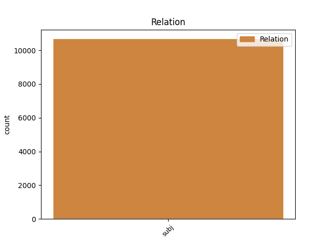
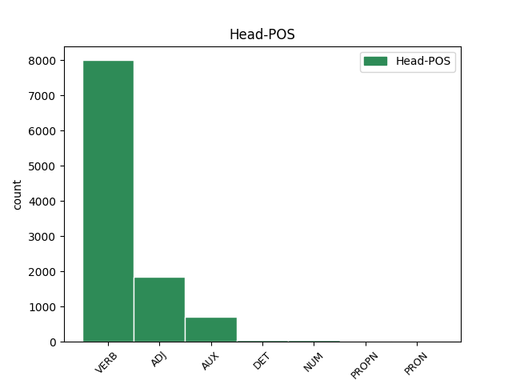
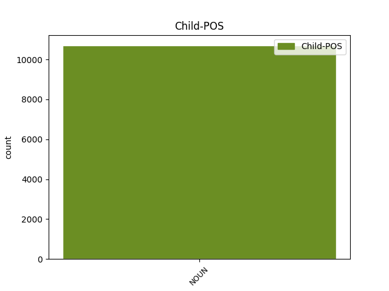

Distribution of features within this leaf



Agreement Rules sorted by frequency.
- When the dependent token is the subject(subj) of the head token, and the head token is VERB and the dependent token is NOUN.
1 Он _ _ _ _ 0 _ _ _
2 задумался _ _ _ _ 0 _ _ _
3 , _ _ _ _ 0 _ _ _
4 чуть _ _ _ _ 0 _ _ _
5 перекосив _ _ _ _ 0 _ _ _
6 худенькое _ _ _ _ 0 _ _ _
7 лицо _ _ _ _ 0 _ _ _
8 , _ _ _ _ 0 _ _ _
9 и _ _ _ _ 0 _ _ _
10 даже _ _ _ _ 0 _ _ _
11 перестал _ _ _ _ 0 _ _ _
12 выдергивать _ _ _ _ 0 _ _ _
13 цветы _ _ _ _ 0 _ _ _
14 и _ _ _ _ 0 _ _ _
15 травинки _ _ _ _ 0 _ _ _
16 , _ _ _ _ 0 _ _ _
17 в _ _ _ _ 0 _ _ _
18 его _ _ _ _ 0 _ _ _
19 коричневых _ _ _ _ 0 _ _ _
20 глазах _ _ _ _ 0 _ _ _
21 появилась появиться VERB _ Aspect=Perf|Gender=Fem|Mood=Ind|Number=Sing|Tense=Past|VerbForm=Fin|Voice=Mid 0 _ _ _
22 боль боль NOUN _ Animacy=Inan|Case=Nom|Gender=Fem|Number=Sing 21 subj _ _
23 - _ _ _ _ 0 _ _ _
24 так _ _ _ _ 0 _ _ _
25 трудно _ _ _ _ 0 _ _ _
26 вложить _ _ _ _ 0 _ _ _
27 в _ _ _ _ 0 _ _ _
28 чужую _ _ _ _ 0 _ _ _
29 душу _ _ _ _ 0 _ _ _
30 самые _ _ _ _ 0 _ _ _
31 простые _ _ _ _ 0 _ _ _
32 и _ _ _ _ 0 _ _ _
33 очевидные _ _ _ _ 0 _ _ _
34 истины _ _ _ _ 0 _ _ _
35 ! _ _ _ _ 0 _ _ _
1 Тот _ _ _ _ 0 _ _ _
2 день _ _ _ _ 0 _ _ _
3 начался _ _ _ _ 0 _ _ _
4 с _ _ _ _ 0 _ _ _
5 маленького _ _ _ _ 0 _ _ _
6 чуда _ _ _ _ 0 _ _ _
7 : _ _ _ _ 0 _ _ _
8 оказалось _ _ _ _ 0 _ _ _
9 , _ _ _ _ 0 _ _ _
10 низинный _ _ _ _ 0 _ _ _
11 , _ _ _ _ 0 _ _ _
12 сыроватый _ _ _ _ 0 _ _ _
13 ольшаник ольшаник NOUN _ Animacy=Inan|Case=Nom|Gender=Masc|Number=Sing 23 subj _ SpaceAfter=No
14 , _ _ _ _ 0 _ _ _
15 примыкающий _ _ _ _ 0 _ _ _
16 с _ _ _ _ 0 _ _ _
17 севера _ _ _ _ 0 _ _ _
18 к _ _ _ _ 0 _ _ _
19 дачной _ _ _ _ 0 _ _ _
20 ограде _ _ _ _ 0 _ _ _
21 , _ _ _ _ 0 _ _ _
22 сказочно _ _ _ _ 0 _ _ _
23 богат богатый ADJ _ Degree=Pos|Gender=Masc|Number=Sing|Variant=Short 0 _ _ _
24 грибами _ _ _ _ 0 _ _ _
25 свинушками _ _ _ _ 0 _ _ _
26 . _ _ _ _ 0 _ _ _
1 Загадочен _ _ _ _ 0 _ _ _
2 был быть AUX _ Aspect=Imp|Gender=Masc|Mood=Ind|Number=Sing|Tense=Past|VerbForm=Fin|Voice=Act 0 _ _ _
3 этот _ _ _ _ 0 _ _ _
4 светлый _ _ _ _ 0 _ _ _
5 , _ _ _ _ 0 _ _ _
6 чистый _ _ _ _ 0 _ _ _
7 березовый _ _ _ _ 0 _ _ _
8 и _ _ _ _ 0 _ _ _
9 осиновый _ _ _ _ 0 _ _ _
10 лесок лесок NOUN _ Animacy=Inan|Case=Nom|Gender=Masc|Number=Sing 2 subj _ SpaceAfter=No
11 , _ _ _ _ 0 _ _ _
12 выкроивший _ _ _ _ 0 _ _ _
13 себе _ _ _ _ 0 _ _ _
14 немалую _ _ _ _ 0 _ _ _
15 площадь _ _ _ _ 0 _ _ _
16 посреди _ _ _ _ 0 _ _ _
17 ольшаника _ _ _ _ 0 _ _ _
18 . _ _ _ _ 0 _ _ _
1 - _ _ _ _ 0 _ _ _
2 На _ _ _ _ 0 _ _ _
3 мой _ _ _ _ 0 _ _ _
4 взгляд _ _ _ _ 0 _ _ _
5 , _ _ _ _ 0 _ _ _
6 причина причина NOUN _ Animacy=Inan|Case=Nom|Gender=Fem|Number=Sing 7 subj _ _
7 одна один DET _ Case=Nom|Degree=Pos|Gender=Fem|Number=Sing 0 _ _ _
8 : _ _ _ _ 0 _ _ _
9 отрыв _ _ _ _ 0 _ _ _
10 аппарата _ _ _ _ 0 _ _ _
11 управления _ _ _ _ 0 _ _ _
12 от _ _ _ _ 0 _ _ _
13 первичных _ _ _ _ 0 _ _ _
14 организаций _ _ _ _ 0 _ _ _
15 , _ _ _ _ 0 _ _ _
16 огосударствление _ _ _ _ 0 _ _ _
17 ВЛКСМ _ _ _ _ 0 _ _ _
18 , _ _ _ _ 0 _ _ _
19 превращение _ _ _ _ 0 _ _ _
20 его _ _ _ _ 0 _ _ _
21 в _ _ _ _ 0 _ _ _
22 своеобразный _ _ _ _ 0 _ _ _
23 наркомат _ _ _ _ 0 _ _ _
24 по _ _ _ _ 0 _ _ _
25 делам _ _ _ _ 0 _ _ _
26 молодежи _ _ _ _ 0 _ _ _
27 . _ _ _ _ 0 _ _ _
1 Дети _ _ _ _ 0 _ _ _
2 любят _ _ _ _ 0 _ _ _
3 играть _ _ _ _ 0 _ _ _
4 в _ _ _ _ 0 _ _ _
5 куплю _ _ _ _ 0 _ _ _
6 - _ _ _ _ 0 _ _ _
7 продажу _ _ _ _ 0 _ _ _
8 , _ _ _ _ 0 _ _ _
9 инстинкт инстинкт NOUN _ Animacy=Inan|Case=Nom|Gender=Masc|Number=Sing 16 subj _ _
10 торговли _ _ _ _ 0 _ _ _
11 , _ _ _ _ 0 _ _ _
12 мены _ _ _ _ 0 _ _ _
13 , _ _ _ _ 0 _ _ _
14 наверное _ _ _ _ 0 _ _ _
15 , _ _ _ _ 0 _ _ _
16 один один NUM _ Case=Nom|Gender=Masc 0 _ _ _
17 из _ _ _ _ 0 _ _ _
18 древнейших _ _ _ _ 0 _ _ _
19 человеческих _ _ _ _ 0 _ _ _
20 инстинктов _ _ _ _ 0 _ _ _
21 . _ _ _ _ 0 _ _ _
1 По _ _ _ _ 0 _ _ _
2 сцене _ _ _ _ 0 _ _ _
3 ее _ _ _ _ 0 _ _ _
4 фамилия фамилия NOUN _ Animacy=Inan|Case=Nom|Gender=Fem|Number=Sing 5 subj _ _
5 Ульская Ульская PROPN _ Animacy=Inan|Case=Nom|Gender=Fem|Number=Sing 0 _ _ _
6 , _ _ _ _ 0 _ _ _
7 по _ _ _ _ 0 _ _ _
8 паспорту _ _ _ _ 0 _ _ _
9 - _ _ _ _ 0 _ _ _
10 Заяц _ _ _ _ 0 _ _ _
11 ; _ _ _ _ 0 _ _ _
12 это _ _ _ _ 0 _ _ _
13 ужасно _ _ _ _ 0 _ _ _
14 , _ _ _ _ 0 _ _ _
15 она _ _ _ _ 0 _ _ _
16 до _ _ _ _ 0 _ _ _
17 сих _ _ _ _ 0 _ _ _
18 пор _ _ _ _ 0 _ _ _
19 краснеет _ _ _ _ 0 _ _ _
20 , _ _ _ _ 0 _ _ _
21 когда _ _ _ _ 0 _ _ _
22 почтальон _ _ _ _ 0 _ _ _
23 приносит _ _ _ _ 0 _ _ _
24 ей _ _ _ _ 0 _ _ _
25 пенсию _ _ _ _ 0 _ _ _
26 и _ _ _ _ 0 _ _ _
27 приходится _ _ _ _ 0 _ _ _
28 расписываться _ _ _ _ 0 _ _ _
29 так _ _ _ _ 0 _ _ _
30 неприлично _ _ _ _ 0 _ _ _
31 . _ _ _ _ 0 _ _ _
1 По _ _ _ _ 0 _ _ _
2 мере _ _ _ _ 0 _ _ _
3 нарастания _ _ _ _ 0 _ _ _
4 экономических _ _ _ _ 0 _ _ _
5 трудностей _ _ _ _ 0 _ _ _
6 будут _ _ _ _ 0 _ _ _
7 искать _ _ _ _ 0 _ _ _
8 козла _ _ _ _ 0 _ _ _
9 отпущения _ _ _ _ 0 _ _ _
10 , _ _ _ _ 0 _ _ _
11 и _ _ _ _ 0 _ _ _
12 кандидат кандидат NOUN _ Animacy=Anim|Case=Nom|Gender=Masc|Number=Sing 15 subj _ _
13 - _ _ _ _ 0 _ _ _
14 вот _ _ _ _ 0 _ _ _
15 он он PRON _ Case=Nom|Gender=Masc|Number=Sing|Person=3 0 _ _ _
16 ! _ _ _ _ 0 _ _ _
Disagree Examples:
1 Три _ _ _ _ 0 _ _ _
2 окна _ _ _ _ 0 _ _ _
3 в _ _ _ _ 0 _ _ _
4 домике _ _ _ _ 0 _ _ _
5 были _ _ _ _ 0 _ _ _
6 ярко _ _ _ _ 0 _ _ _
7 освещены _ _ _ _ 0 _ _ _
8 , _ _ _ _ 0 _ _ _
9 а _ _ _ _ 0 _ _ _
10 в _ _ _ _ 0 _ _ _
11 двух _ _ _ _ 0 _ _ _
12 крайних _ _ _ _ 0 _ _ _
13 , _ _ _ _ 0 _ _ _
14 о _ _ _ _ 0 _ _ _
15 которых _ _ _ _ 0 _ _ _
16 говорила _ _ _ _ 0 _ _ _
17 Ефимова _ _ _ _ 0 _ _ _
18 , _ _ _ _ 0 _ _ _
19 света свет NOUN _ Animacy=Inan|Case=Gen|Gender=Masc|Number=Sing 21 subj _ _
20 не _ _ _ _ 0 _ _ _
21 было быть VERB _ Aspect=Imp|Gender=Neut|Mood=Ind|Number=Sing|Tense=Past|VerbForm=Fin|Voice=Act 0 _ _ _
22 . _ _ _ _ 0 _ _ _
1 Разведчиков разведчик NOUN _ Animacy=Anim|Case=Gen|Gender=Masc|Number=Plur 5 subj _ _
2 вместе _ _ _ _ 0 _ _ _
3 с _ _ _ _ 0 _ _ _
4 Мостовым _ _ _ _ 0 _ _ _
5 было быть VERB _ Aspect=Imp|Gender=Neut|Mood=Ind|Number=Sing|Tense=Past|VerbForm=Fin|Voice=Act 0 _ _ _
6 четверо _ _ _ _ 0 _ _ _
7 . _ _ _ _ 0 _ _ _
1 Несколько _ _ _ _ 0 _ _ _
2 голов голова NOUN _ Animacy=Inan|Case=Gen|Gender=Fem|Number=Plur 3 subj _ _
3 пригнулось пригнуться VERB _ Aspect=Perf|Gender=Neut|Mood=Ind|Number=Sing|Tense=Past|VerbForm=Fin|Voice=Mid 0 _ _ _
4 . _ _ _ _ 0 _ _ _
1 Но _ _ _ _ 0 _ _ _
2 боли боль NOUN _ Animacy=Inan|Case=Gen|Gender=Fem|Number=Sing 4 subj _ _
3 не _ _ _ _ 0 _ _ _
4 было быть VERB _ Aspect=Imp|Gender=Neut|Mood=Ind|Number=Sing|Tense=Past|VerbForm=Fin|Voice=Act 0 _ _ _
5 , _ _ _ _ 0 _ _ _
6 и _ _ _ _ 0 _ _ _
7 рука _ _ _ _ 0 _ _ _
8 держала _ _ _ _ 0 _ _ _
9 ружье _ _ _ _ 0 _ _ _
10 . _ _ _ _ 0 _ _ _
1 Ослепительно _ _ _ _ 0 _ _ _
2 сверкнувший _ _ _ _ 0 _ _ _
3 огонь огонь NOUN _ Animacy=Inan|Case=Nom|Gender=Masc|Number=Sing 8 subj _ _
4 и _ _ _ _ 0 _ _ _
5 еще _ _ _ _ 0 _ _ _
6 что-то _ _ _ _ 0 _ _ _
7 острое _ _ _ _ 0 _ _ _
8 вошло войти VERB _ Aspect=Perf|Gender=Neut|Mood=Ind|Number=Sing|Tense=Past|VerbForm=Fin|Voice=Act 0 _ _ _
9 в _ _ _ _ 0 _ _ _
10 него _ _ _ _ 0 _ _ _
11 , _ _ _ _ 0 _ _ _
12 в _ _ _ _ 0 _ _ _
13 мозг _ _ _ _ 0 _ _ _
14 его _ _ _ _ 0 _ _ _
15 , _ _ _ _ 0 _ _ _
16 в _ _ _ _ 0 _ _ _
17 тело _ _ _ _ 0 _ _ _
18 , _ _ _ _ 0 _ _ _
19 вошло _ _ _ _ 0 _ _ _
20 безбольно _ _ _ _ 0 _ _ _
21 и _ _ _ _ 0 _ _ _
22 мягко _ _ _ _ 0 _ _ _
23 , _ _ _ _ 0 _ _ _
24 словно _ _ _ _ 0 _ _ _
25 не _ _ _ _ 0 _ _ _
26 было _ _ _ _ 0 _ _ _
27 в _ _ _ _ 0 _ _ _
28 нем _ _ _ _ 0 _ _ _
29 ни _ _ _ _ 0 _ _ _
30 костей _ _ _ _ 0 _ _ _
31 , _ _ _ _ 0 _ _ _
32 ни _ _ _ _ 0 _ _ _
33 нервов _ _ _ _ 0 _ _ _
34 . _ _ _ _ 0 _ _ _